get_homologues-est manual
Bruno Contreras-Moreira (1) and Pablo Vinuesa (2)
1. Estación Experimental de Aula Dei-CSIC
2. Centro de Ciencias Genómicas, Universidad Nacional Autónoma de México
This document describes GET_HOMOLOGUES-EST, a fork of get_homologues for clustering homologous
gene/transcript sequences of strains/populations of the same species.
The source code and issue manager can be found at
https://github.com/eead-csic-compbio/get_homologues.
This algorithm has been designed and tested with
plant transcripts and CDS sequences, and uses BLASTN to compare DNA sequences. The main tasks for which this was conceived are:
- Finding and translating coding regions (CDSs) within raw transcripts.
- Clustering transcripts/CDS nucleotide sequences in homologous (possibly orthologous) groups, on the grounds of DNA sequence similarity.
- Definition of pan- and core-transcriptomes by calculation of overlapping sets of CDSs.
The core algorithms of get_homologues-est have been adapted from get_homologues, and are therefore explained
in manual_get_homologues.pdf.
This document focuses mostly on EST-specific options.
When obtaining twin DNA and peptide CDS files, the output of GET_HOMOLOGUES-EST can be used to drive phylogenomics
and population genetics analyses with the kin pipeline GET_PHYLOMARKERS.
This table lists features developed for get_homologues-est which were not available in the original get_homologues release,
although most have been backported.
Table 1:
List of novel scripts/features in get_homologues-est.
| name |
description |
| transcripts2cds.pl |
Script to extract coding sequences CDS from raw transcripts by combining Transdecoder and BLASTX. |
| redundant isoform calling |
get_homologues-est can handle redundant isoforms which otherwise will degrade clustering performance. |
| ANI matrices |
get_homologues-est can compute Average Nucleotide Identity (ANI) matrices which summarize the genetic distance among input genotypes. |
| make_nr_pangenome_matrix.pl |
Produces a non-redundant pangenome matrix by comparing all nucleotide/peptide clusters to each other. |
| pfam_enrich.pl |
Script to test whether a set of sequence clusters are enriched in some Pfam domains. |
| annotate_cluster.pl |
Produces a multiple alignment view of the supporting local BLAST alignments of sequences in a cluster.
It can also annotate Pfam domains and find private sequence variants private to an arbitrary group of sequences. |
|
2 Requirements and installation
get_homologues-est.pl is a Perl5 program bundled with a few binary files.
The software has been tested on 64-bit Linux boxes, and on Intel MacOSX systems.
Therefore, a Perl5 interpreter is needed to run this software, which
is usually installed by default on these operating systems.
In order to install and test this software please follow these steps:
- Download a bundled release from https://github.com/eead-csic-compbio/get_homologues/releases
- Unpack the software with:
$ tar xvfz get_homologues_X.Y.tgz
$ cd get_homologues_X.Y
$ perl install.pl
Please follow the indications in case some required part is missing.
- Type
$ ./get_homologues-est.pl -v which will tell exactly which features are available.
- Test the main Perl script, named
get_homologues-est.pl, with the included sample input folder
sample_transcripts_fasta
by means of the instruction:
$ ./get_homologues-est.pl -d sample_transcripts_fasta .
You should get an output similar to the contents of file sample_transcripts_output.txt.
- Optionally modify your
$PATH environment variable to include get_homologues-est.pl.
Please copy the following lines to the .bash_profile or
.bashrc files, found in your home directory, replacing [INSTALL_PATH] by the full path of the installation folder:
export GETHOMS=[INSTALL_PATH]/get_homologues_X.Y
export PATH=${GETHOMS}/:${PATH}
This change will be effective in a new terminal or after running: $ source ~/.bash_profile
If you prefer a copy of the software that can be updated in the future you can get it from the GitHub repository
with:
$ git clone https://github.com/eead-csic-compbio/get_homologues.git
$ perl install.pl
You would then be able to update it at anytime with:
$ cd get_homologues
$ git pull
Finally, you can also install the software from bioconda
as follows:
$ conda activate bioconda
$ conda create -n get_homologues -c conda-forge -c bioconda get_homologues
$ conda activate get_homologues
# only if you want to install Pfam or SwissProt db
$ perl install.pl
See section 2.3 to learn how to configure the software to run on a HPC environment.
The rest of this section might be safely skipped if installation went fine,
it was written to help solve installation problems.
2.1 Perl modules
A few Perl core modules are required by the get_homologues-est.pl script, which should be
already installed on your system: Cwd, FindBin, File::Basename, File::Spec, File::Temp, FileHandle, List::Util,
Getopt::Std, Benchmark and Storable.
In addition, the Bio::Seq, Bio::SeqIO, Bio::Graphics and Bio::SeqFeature::Generic
modules from the Bioperl
collection,
and modules Parallel::ForkManager,
URI::Escape
are also required, and have been included in the get_homologues-est bundle for your convenience.
Should this version of BioPerl fail in your system (as diagnosed by install.pl)
it might be necessary to install it from scratch.
However, before trying to download it, you might want to check whether
it is already living on your system, by typing on the terminal:
$ perl -MBio::Root::Version -e 'print $Bio::Root::Version::VERSION'
If you get a message Can't locate Bio/Root/Version... then you need to actually install it, which
can sometimes become troublesome due to failed dependencies. For this reason usually the easiest way of
installing it, provided that you have root privileges,
it is to use the software manager of your Linux distribution (such as synaptic/apt-get
in Ubuntu, yum in Fedora or YaST in openSUSE). If you prefer the terminal please use the
cpan program with administrator privileges (sudo in Ubuntu):
$ cpan -i C/CJ/CJFIELDS/BioPerl-1.6.1.tar.gz
This form should be also valid:
$ perl -MCPAN -e 'install C/CJ/CJFIELDS/BioPerl-1.6.1.tar.gz'
Please check this tutorial
if you need further help.
2.2 Required binaries
In order to properly read (optionally) compressed input files, get_homologues-est requires gunzip and
bunzip2, which should be universally installed on most systems.
The Perl script install.pl, already mentioned in section 2, checks whether the included
precompiled binaries for hmmer, MCL
and BLAST
are in place and ready to be used by get_homologues-est.
This includes also COGtriangles, which is used only by
prokaryotic get_homologues. However, if any of these binaries fails to work in
your system, perhaps due a different architecture or due to missing libraries, it will be necessary to obtain
an appropriate version for your system or to compile them with your own compiler.
In order to compile MCL the GNU gcc compiler is required, although it should most certainly already be
installed on your system. If not, you might install it by any of the alternatives listed in section 2.1.
For instance, in Ubuntu this works well: $ sudo apt-get install gcc . The compilation steps are
as follows:
$ cd bin/mcl-14-137;
$ ./configure`;
$ make
Regarding BLAST, get_homologues-est uses BLAST+ binaries, which
can be easily downloaded from the NCBI FTP
site.
The packed binaries are blastp and makeblastdb from version ncbi-blast-2.17.0+. If these do
not work in your machine or your prefer to use older BLAST versions, then it will be necessary to
edit file lib/phyTools.pm. First, environmental variable $ENV{'BLAST_PATH'} needs to be set to
the right path in your system (inside subroutine sub set_phyTools_env).
Variables $ENV{'EXE_BLASTP'} and $ENV{'EXE_FORMATDB'} also need to be changed to the appropriate
BLAST binaries, which are respectively blastall and formatdb.
2.3 HPC configuration
It is possible and recommended to run get_homologues-est on a high-performance computing (HPC) cluster
invoking the program with option -m cluster.
For gridengine
environments (6.0u8, 6.2u4, 2011.11p1)
the script should work out of the box. For LSF
and
Slurm
settings a configuration step is required.
In these cases you would need to create a file named HPC.conf
in the same location as get_homologues-est.pl tayloring your queue configuration and paths.
Alternatively it is possible to create a configuration file anywhere in your filesystem,
with -m /path/custom/HPC.conf, which is useful for work for conda installs.
Check the sample configuration file at
sample.HPC.conf.
If your computer farm is managed by LSF,
you should create a file named HPC.conf modifiying the provided template sample.HPC.conf
and adding a full path if necessary:
# cluster/farm configuration file, edit as needed (use spaces or tabs)
# comment lines start with #
# PATH might be empty or set to a path/ ending with '/', example:
#PATH /lsf/10.1/linux3.10-glibc2.17-x86_64/bin/
TYPE lsf
SUBEXE bsub
CHKEXE bjobs
DELEXE bkill
ERROR EXIT
If your farm is managed by Slurm
instead,
the contents of the configuration file HPC.conf should be similar to this:
TYPE slurm
SUBEXE sbatch
CHKEXE squeue
DELEXE scancel
ERROR F
For backwards compatibility, we provide here instructions on how to set up your own Grid Engine cluster.
### Debian 11 install (updated 08112021)
### (explained in Spanish at
### https://bioinfoperl.blogspot.com/2021/10/howto-install-grid-engine-on-multi-core-box-debian.html.html)
# this also creates user sgeadmin
sudo apt install gridengine-master gridengine-qmon gridengine-exec
# edit /etc/hosts
127.0.0.1 localhost.localdomain localhost
127.0.1.1 master master
121.xxx.yyy.zzz myhost
# give yourself provileges
sudo -u sgeadmin qconf -am myuser
# and to a userlist
qconf -au myuser users
# Add a submission host
qconf -as myhost
# Add an execution host, you will be prompted for information about the execution host
qconf -ae
# Add a new host group
qconf -ahgrp @allhosts
# Add the exec host to the @allhosts list
qconf -aattr hostgroup hostlist myhost @allhosts
# Add and configure queue, set the slots matching your CPU/cores
qconf -aq all.q
# Add the host group to the queue
qconf -aattr queue hostlist @allhosts all.q
# Make sure there is a slot allocated to the execd
qconf -aattr queue slots "[myhost=1]" all.q
### Ubuntu install from SourceForge (updated 08112021)
# 1) go to https://sourceforge.net/projects/gridengine/files/SGE/releases/8.1.9 ,
# create user 'sgeadmin' and download the latest binary packages
# (Debian-like here) matching your architecture (amd64 here):
wget -c https://sourceforge.net/projects/gridengine/files/SGE/releases/8.1.9/sge-common_8.1.9_all.deb/download
wget -c https://sourceforge.net/projects/gridengine/files/SGE/releases/8.1.9/sge_8.1.9_amd64.deb/download
wget -c https://sourceforge.net/projects/gridengine/files/SGE/releases/8.1.9/sge-dbg_8.1.9_amd64.deb/download
sudo useradd sgeadmin
sudo dpkg -i sge-common_8.1.9_all.deb
sudo dpkg -i sge_8.1.9_amd64.deb
sudo dpkg -i sge-dbg_8.1.9_amd64.deb
sudo apt-get install -f
# 2) set hostname to anything but localhost by editing /etc/hosts so that
# the first line is something like this (localhost or 127.0.x.x IPs not valid):
# 172.1.1.1 yourhost
# 3) install Grid Engine server with defaults except cluster name ('yourhost')
# and admin user name ('sgeadmin'):
sudo su
cd /opt/sge/
chown -R sgeadmin sge
chgrp -R sgeadmin sge
./install_qmaster
# 4) install Grid Engine client with all defaults:
./install_execd
exit
# 5) check the path to your sge binaries, which can be 'lx-amd64'
ls /opt/sge/bin
# 6) Set relevant environment variables in /etc/bash.bashrc [can also be named /etc/basrhc]
# or alternatively in ~/.bashrc for a given user
export SGE_ROOT=/opt/sge
export PATH=$PATH:"$SGE_ROOT/bin/lx-amd64"
# 7) Optionally configure default all.q queue:
qconf -mq all.q
# 8) Add your host to list of admitted hosts:
qconf -as yourhost
2.4 Optional software dependencies
It is possible to invoke Pfam domain scanning from get_homologues-est. This option
requires the bundled binary hmmscan, which is part of the HMMER3
package,
whose path is set in file lib/phyTools.pm (variable $ENV{'EXE_HMMPFAM'}).
Should this binary not work in your system, a fresh install might be the solution, say in /your/path/hmmer-3.1b2/.
In this case you'll have to edit file lib/phyTools.pm and modify the relevant:
if( ! defined($ENV{'EXE_HMMPFAM'}) )
{
$ENV{'EXE_HMMPFAM'} = '/your/path/hmmer-3.1b2/src/hmmscan --noali --acc --cut_ga ';
}
The Pfam HMM library is also required and the install.pl script should take care of it.
However, you can manually download it from the appropriate
Pfam FTP site.
This file needs to be decompressed, either in the default db folder or in any other location,
and then it should be formatted with the program hmmpress, which is also part of the
HMMER3 package. A valid command sequence could be:
$ cd db;
$ wget https://ftp.ebi.ac.uk/pub/databases/Pfam/current_release/Pfam-A.hmm.gz .;
$ gunzip Pfam-A.hmm.gz;
$ /your/path/hmmer-3.1b2/src/hmmpress Pfam-A.hmm
Finally, you'll need to edit file lib/phyTools.pm and modify the relevant line to:
if( ! defined($ENV{"PFAMDB"}) ){ $ENV{"PFAMDB"} = "db/Pfam-A.hmm"; }
In order to reduce the memory footprint of get_homologues-est it is possible to take advantage of the
Berkeley_DB
database engine, which requires Perl core module
DB_File, which should be installed on all major Linux distributions.
If DB_File is not found within a conda environment you might have to run conda deactivate before.
Should manual installation be required, this can be done as follows:
$ yum -y install libdb-devel # Redhat and derived distros
$ sudo apt-get -y install libdb-dev # Ubuntu/Debian-based distros, and then cpan below
$ cpan -i DB_File # requires administrator privileges (sudo)
The accompanying script transcripts2cds.pl should work out of the box, but the more efficient
transcripts2cdsCPP.pl requires the installation of module
Inline::CPP,
which in turn requires Inline::C
and g++, the GNU C++ compiler.
The installation of these modules is known to be troublesome in some systems, but the standard way should work in most cases:
$ yum -y install gcc-c++ perl-Inline-C perl-Inline-CPP # Redhat and derived distros
$ sudo apt-get -y install g++ # Ubuntu/Debian-based distros, and then cpan below
$ cpan -i Inline::C Inline::CPP # will require administrator privileges (sudo)
This script may optionally use Diamond
instead of BLASTX.
The bundled linux binary should work out of the box; in case the macOS binary does not work in your system you might have to
re-compile it with:
cd bin/diamond-0.8.25/
build_simple.sh
cd ../../..
The accompanying scripts compare_clusters.pl, plot_pancore_matrix.pl, parse_pangenome_matrix.pl,
plot_matrix_heatmap.sh, hcluster_pangenome_matrix.sh require the installation of the statistical software
R,
which usually is listed by software managers in all major Linux distributions.
In some cases (some SuSE versions
and
some Redhat-like distros)
it will be necessary to add a repository to your package manager.
R can be installed from the terminal:
$ sudo apt-get -y install r-base r-base-dev # Ubuntu/Debian-based distros
$ yum -y install R # RedHat and derived distros
$ zypper --assume-yes R-patched R-patched-devel # Suse
Please visit CRAN
to download and install R on macOSX systems, which is straightforward.
In addition to R itself, plot_matrix_heatmap.sh and hcluster_pangenome_matrix.sh require some R packages to run,
which can be easily installed from the R command line with:
> install.packages(c("ape", "gplots", "cluster", "dendextend, "factoextra"), dependencies=TRUE)
Finally, the script compare_clusters.pl might require the installation of program PARS from the
PHYLIP suite, which should be already bundled
with your copy of get_homologues.
This section describes the available options for the get_homologues-est software.
3.1 Input data
This program takes input sequences in FASTA format, which might be GZIP- or BZIP2-compressed, contained in a
directory or folder containing several files with extension '.fna', which can have twin .faa files with
translated amino acid sequences for the corresponding CDSs (expected to be in same order).
File names matching the tag 'flcdna' are handled as
full-length transcripts, and this information will be used downstream in order to estimate coverage.
Global variable $MINSEQLENGTH controls the minimum length of sequences to be considered; the default value is 20.
3.2 Program options
Typing $ ./get_homologues-est.pl -h on the terminal will show the basic options:
-v print version, credits and checks installation
-d directory with input FASTA files (.fna , optionally .faa), (use of pre-clustered sequences
1 per sample, or subdirectories (subdir.clusters/subdir_) ignores -c)
with pre-clustered sequences (.faa/.fna ). Files matching
tag 'flcdna' are handled as full-length transcripts.
Allows for files to be added later.
Creates output folder named 'directory_est_homologues'
Optional parameters:
-o only run BLASTN/Pfam searches and exit (useful to pre-compute searches)
-i cluster redundant isoforms, including those that can be (min overlap, default: -i 40,
concatenated with no overhangs, and perform use -i 0 to disable)
calculations with longest
-c report transcriptome composition analysis (follows order in -I file if enforced,
with -t N skips clusters occup<N [OMCL],
ignores -r,-e)
-R set random seed for genome composition analysis (optional, requires -c, example -R 1234)
-m runmode [local|cluster|dryrun|/path/custom/HPC.conf] (def: local, path overrides ./HPC.conf)
-n nb of threads for BLASTN/HMMER/MCL in 'local' runmode (default=2)
-I file with .fna files in -d to be included (takes all by default, requires -d)
Algorithms instead of default bidirectional best-hits (BDBH):
-M use orthoMCL algorithm (OMCL, PubMed=12952885)
Options that control sequence similarity searches:
-C min %coverage of shortest sequence in BLAST alignments (range [1-100],default: -C 75)
-E max E-value (default: -E 1e-05 , max=0.01)
-D require equal Pfam domain composition (best with -m cluster or -n threads)
when defining similarity-based orthology
-S min %sequence identity in BLAST query/subj pairs (range [1-100],default: -S 95 [BDBH|OMCL])
-b compile core-transcriptome with minimum BLAST searches (ignores -c [BDBH])
Options that control clustering:
-t report sequence clusters including at least t taxa (default: t=numberOfTaxa,
t=0 reports all clusters [OMCL])
-L add redundant isoforms to clusters (optional, requires -i)
-r reference transcriptome .fna file (by default takes file with
least sequences; with BDBH sets
first taxa to start adding genes)
-e exclude clusters with inparalogues (by default inparalogues are
included)
-F orthoMCL inflation value (range [1-5], default: -F 1.5 [OMCL])
-A calculate average identity of clustered sequences, (optional, creates tab-separated matrix,
uses blastn results [OMCL])
-P calculate percentage of conserved sequences (POCS), (optional, creates tab-separated matrix,
uses blastn results, best with CDS [OMCL])
-z add soft-core to genome composition analysis (optional, requires -c [OMCL])
Figure 1:
Flowchart of get_homologues-est.
|
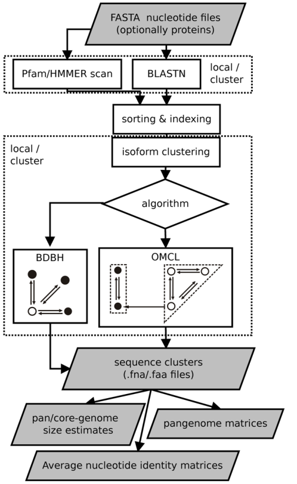
|
The only required option is -d, which indicates
an input folder, as seen in section 3.1. It is important to remark that in principle only files
with extensions .fna / .fa / .fasta and optionally .faa are considered when parsing the -d directory.
By using .faa input files protein sequences can be used to scan Pfam domains and included in output clusters.
The use of an input folder or directory (-d)
is recommended as it allows for new files to be added there in the future, reducing the computing required
for updated analyses. For instance, if a user does a first analysis with 5 input genomes today, it is possible
to check how the resulting clusters would change when adding an extra 10 genomes tomorrow, by copying these new 10
.fna input files to the pre-existing -d folder, so that all previous BLASTN searches are re-used.
All remaining flags are options that can modify the default behavior of the program, which is to use the
bidirectional best hit algorithm (BDBH) in order to compile clusters of potential orthologous DNA sequences,
taking the smallest genome as a reference. By default nucleotide sequences are used to guide the clustering, thus
relying on BLASTN searches.
Perhaps the most important optional parameter would be the choice of clustering algorithm (Table 2):
Table 2:
List of available clustering algorithms. Note that the COG triangles algorithm is not supported.
| name |
option |
|
| BDBH |
default |
Starting from a reference genome, keep adding genomes stepwise while storing the sequence clusters
that result of merging the latest bidirectional best hits. |
| OMCL |
-M |
OrthoMCL v1.4, uses the Markov Cluster Algorithm to group sequences,
with inflation (-F) controlling cluster granularity, as described in
PubMed=12952885. |
|
The remaining options are now reviewed:
- Apart from showing the credits, option
-v can be helpful after installation,
for it prints the enabled features of the program.
-o is ideally used to submit to a computer cluster the required BLAST (and Pfam) searches, preparing a job for posterior
analysis on a single computer.
-i can be used to filter out short, redundant isoforms which overlap, with no overhangs, for a minimun length.
By default this is set to $MINREDOVERLAP=40 as in PubMed=12651724.
This EST-specific feature can be turned off by setting -i 0. Redundant isoforms will not be output unless -L is set.
Figure 2:
Redundant isoforms (dashed) are optionally removed from an input sequence set if they overlap a longer
sequence over a length (A) or when they are completely matched (B).
In either case a 100% sequence identity is required.
By calling option -L all redundant isoforms are included in the output.
|
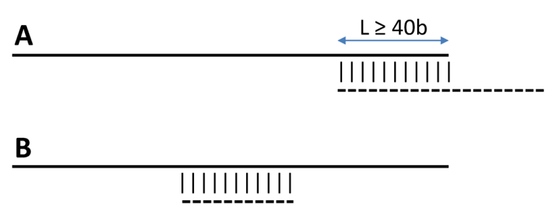
|
-c is used to request a pan- and core-genome analysis of the input sequences, which will be output as tab-separated files.
The number of samples for the genome composition analysis is set to 20 by default, but this can be edited at the header of
get_homologues-est.pl (check the $NOFSAMPLESREPORT variable). As get_homologues-est is meant to be used primarily for
the study of transcripts/CDSs of the same species, it uses appropriate thresholds to define new accessory genes
($MIN_PERSEQID_HOM_EST=70, $MIN_COVERAGE_HOM_EST=50), which mean that genes/transcripts added to the pool must be 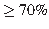
identical in sequence to any previous sequence with cover in order to be called homologous; otherwise they are handled as novel sequences.
This low coverage is set in order to allow transcripts with retained/unprocessed introns to be matched.
The default identity value was chosen to match the fact that BLASTN::megablast hardly reports hits with lower identities in our tests
with barley transcripts and A.thaliana CDS sequences.
Note that these default values are different to those set in get_homologues for peptide sequences.
When combined with flag -t (see below), the composition analysis will disregard clusters reported in a selected number of strains.
This feature can be used to filter out singletons or artifacts which might arise from de novo assembled transcriptomes.
Figure 3:
Histograms of % identity reported by BLASTN among Arabidopsis thaliana CDS sequences (left) and Hordeum vulgare (right) transcripts.
Note that the default BLASTN algorithm (megablast) hardly reports alignments with identities .
Plots were computed from 51,110,547 and 70,653,179 alignments, respectively.
|
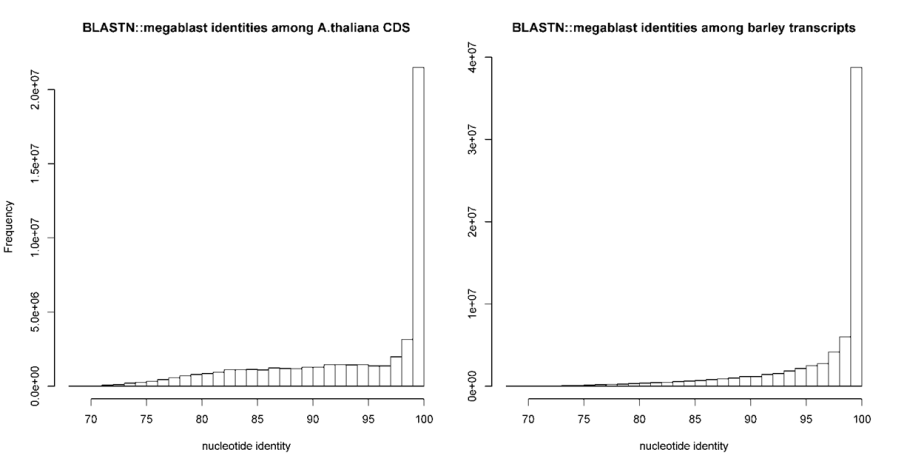
|
-R takes a number that will be used to seed the random generator used with option -c. By using the
same seed in different -c runs the user ensures that genomes are sampled in the same order.
-s can be used to reduce the memory footprint, provided that the Perl module
BerkeleyDB
is in place.
This option usually makes get_homologues-est slower, but for very large datasets or in machines with little memory resources
this might be the only way to complete a job.
-m allows the choice of runmode, which can be either -m local (the default),
-m cluster, for computing farms configured as explained in section 2.4) and
-m dryrun, which will allow you to run all required parallel jobs in batches manually.
Additionally -m /path/custom/HPC.conf can be used for cluster jobs that require a
custom HPC configuration file located elsewhere on the filesystem, useful for conda installs.
When combined with command-line tool ![[*]](crossref.png) parallel,
the dryrun mode can be used to parallelize the clustering tasks (isoforms, orthologues, inparalogues, see 4.3).
parallel,
the dryrun mode can be used to parallelize the clustering tasks (isoforms, orthologues, inparalogues, see 4.3).
-n sets the number of threads/CPUs to dedicate to each BLAST/HMMER/mcl job run locally, which by default is 2.
-I list_file.txt allows the user to restrict a get_homologues-est job to a subset of FASTA files included in the input -d folder.
This flag can be used in conjunction with -c to control the order in which genomes are considered during pan- and core-transcriptome analyses.
Taking the sample_RNAseq folder, a valid list_file.txt could contain these lines:
Esterel.trinity.fna.bz2
Franka.trinity.fna.bz2
- option
-C sets the minimum percentage of coverage required to call two sequences best hits.
As EST/transcripts are frequently truncated, by default coverage is calculated with respect to the shortest sequence in the pair,
unless both of them come from a full-length collection (see 3.1).
Figure 4:
Coverage illustrated with the alignment of sequence 'query' to two aligned fragments of sequence 'subject'.
Lq and Ls are the lengths of both sequences, and s1,e1,s2,e2 and Lq are alignment coordinates.
|
|
-E sets the maximum expectation value (E-value) for BLASTN alignments. This value is by default set to 1e-05.
-D is an extra restriction for calling best hits, that should have identical Pfam domain compositions. Note that this
option requires scanning all input sequences for Pfam domains, and this task requires extra computing time,
ideally on a computer cluster (-m cluster).
While for BDBH domain filtering is done at the time bidirectional best hits are called, this processing step is performed only after the
standard OMCL algorithms have completed, to preserve the algorithm features.
-S can be passed to require a minimum % sequence identity for two sequences to be called best hits.
The default value is set to 95%, as in PubMed=21572440.
-b reduces the number of pairwise BLAST searches performed while compiling core-genomes with algorithm BDBH,
reducing considerably memory and run-time requirements (for genomes, 3G searches are launched instead of the default 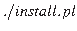).
It comes at the cost of being less exhaustive in finding inparalogues, but in our bacterial benchmarks this potential, undesired
effect was negligible.
-t is used to control which sequence clusters should be reported. By default only clusters which include at least one sequence
per genome are output. However, a value of -t 2 would report all clusters containing sequences from at least 2 taxa. A especial
case is -t 0, which will report all clusters found, even those with sequences from a single genome.
-r allows the choice of any input sequence set (of course included in -d folder)
as the reference, instead of the default smaller one. If possible, resulting clusters are named using CDS/transcript names from
this genome, which can be used to select well annotated species for this purpose.
-e excludes clusters with inparalogues, defined as sequences with best hits in its own genome.
This option might be helpful to rule out clusters including several sequences from the same species, which might be of
interest for users employing these clusters for primer design, for instance.
-F is the inflation value that governs Markov Clustering in OMCL runs, as explained in
PubMed=12952885. As a rule of thumb,
low inflation values (-F 1)result in the inclusion of more sequences in fewer groups, whilst large values
produce more, smaller clusters (-F 4).
-A tells the program to produce a tab-separated file with average % sequence identity values among pairs of genomes,
computed from sequences in the final set of clusters (see also option -t ).
By default these identities are derived from BLASTN alignments, and hence correspond to nucleotide sequence identities, to
produce genomic average nucleotide sequence identities (ANI).
-P tells the program to produce a tab-separated file with % of conserved sequence clusters shared by pairs of species. These values are computed the following expression adapted from
PubMed=24706738:

where  and
and  represent the conserved number of nucleotide sequences in the two genomes being compared, respectively, and
represent the conserved number of nucleotide sequences in the two genomes being compared, respectively, and  +and the total number of sequences in the two genomes being compared, respectively. These values are computed from sequences in the final set of clusters (see also option
+and the total number of sequences in the two genomes being compared, respectively. These values are computed from sequences in the final set of clusters (see also option -t ).
-z can be called when performing a genome composition analysis with clustering algorithm OMCL.
In addition to the core- and pan-genome tab-separated files mentioned earlier (see option -c), this flag requests
a soft-core report, considering all sequence clusters present in a fraction of genomes defined by global variable $SOFTCOREFRACTION,
with a default value of 0.95. This choice produces a composition report more robust to assembly or annotation errors than the core-genome.
The following Perl and shell scripts are included in each release to assist in the interpretation of results generated
by get_homologues-est.pl. See examples of use in manual_get_homologues.pdf
manual_get_homologues.pdf:
- compare_clusters.pl primarily calculates the intersection between cluster sets,
which can be used to select clusters supported by different algorithms or settings.
This script can also produce pangenome matrices and Venn diagrams.
- parse_pangenome_matrix.pl is a script that can be used to analyze pan-genome sets, in order to
find transcripts/genes present in a group A of strains which are absent in set B. This script can also be used
for calculating and plotting cloud, shell and core genome compartments.
- make_nr_pangenome_matrix.pl is provided to post-process pangenome matrices in case the user wishes
to remove redundant clusters, using either nucleotide or protein sequence identity cut-offs.
- plot_pancore_matrix.pl, a Perl script to plot pan/soft/core-genome sampling results and to fit regression
curves with help from R
functions.
- check_BDBHs.pl is a script that can be used, after a previous get_homologues-est run, to find out the
bidirectional best hits of a sequence identifier chosen by the user. It can also retrieve the Pfam annotations of a sequence and its
reciprocal best hits.
- add_pancore_matrices.pl can be used to add pan/core-matrices produced by previous
get_homologues.est -c -R runs on the same set of genomes, with the aim of combining clusters.
- annotate_cluster.pl produces a multiple alignment view of the supporting local BLAST alignments of sequences in a cluster.
It can also annotate Pfam domains and find private sequence variants private to an arbitrary group of sequences.
- plot_matrix_heatmap.sh calculates ordered heatmaps with attached row and column dendrograms from
tab-separated numeric matrices, which can be presence/absence pangenomic matrices or similarity / identity matrices as those
produced by get_homologues-est with flag
-A.
- hcluster_pangenome_matrix.sh generates a distance matrix out of a tab-separated presence/absence pangenome matrix,
which is then used to call R functions
hclust() and heatmap.2() in order to produce a heatmap.
- pfam_enrich.pl calculates the enrichment of a set of sequence clusters in terms of Pfam domains,
by using Fisher's exact test.
Apart from these, auxiliar transcripts2cds.pl script is bundled to assist in the
analysis of transcripts. In particular, this script can be used to annotate potential Open Reading Frames (ORFs) contained within raw transcripts,
which might be truncated or contain introns. This script uses TransDecoder, BLASTX and SWISSPROT, which should
be installed by running:

Ths program supports the following options:
usage: ./transcripts2cds.pl [options] <input FASTA file(s) with transcript nucleotide sequences>
-h this message
-p check only 'plus' strand (optional, default both strands)
-l min length for CDS (optional, default=50 amino acid residues)
-g genetic code to use during translation (optional, default=1, example: -g 11)
-d run blastx against selected protein FASTA database file (default=swissprot, example: -d db.faa)
-E max E-value during blastx search (default=1e-05)
-n number of threads for BLASTX jobs (default=2)
-X use diamond instead of blastx (optional, much faster for many sequences)
-G show available genetic codes and exit
The main output of this script are two files, as shown in section 4.1, which contain inferred nucleotide and peptide CDS sequences.
These FASTA files contain in each header the evidence supporting each called CDS, which can be blastx, transdecoder or
a combination of both, giving precedence to blastx in case of conflict.
Note that we have observed that the output of TransDecoder might change if a single sequence is analyzed alone, in contrast
to the analysis of a batch of sequences.
The next table shows the rules and evidence codes
used by this script in order to call CDS sequences by merging BLASTX (1) and TransDecoder (2) predictions. The rules are mutually exclusive
and are tested hierarchically from top to bottom. Sequences from 1 and 2 with less than 90 consecutive matches (30 amino acid residues) are considered
to be non-overlapping (last rule). Note that the occurrence of mismatches are checked as a control:
graphical summary evidence description
1---------- blastx no transdecoder
2---------- transdecoder no blastx
1---------- blastx.transdecoder inferred CDS overlap with no
2----------- mismatches and are concatenated
1---------- transdecoder.blastx inferred CDS overlap with no
2----------- mismatches and are concatenated
1----------------- blastx<transdecoder blastx CDS includes transdecoder CDS
2-----------
1---------- transdecoder<blastx transdecoder CDS includes blastx CDS
2------------------
1--------C-- blastx-mismatches blastx CDS is returned as sequences
2---T------ have mismatches
1----- blastx-noover blastx CDS is returned as transdecoder
2--- CDS does not overlap
Our benchmarks suggest that 78 to 92% of deduced CDS sequences match the correct peptide sequences. :
Table 3:
Fraction of correct peptide sequences in deduced CDS obtained by combining BLASTX and TransDecoder.
| evidence |
Arabidopsis thaliana [Col-0] |
n |
Hordeum vulgare [Haruna Nijo] |
n |
blastx |
0.787 |
960 |
0.654 |
1,657 |
transdecoder |
0.914 |
8,194 |
0.662 |
9,026 |
blastx.transdecoder |
0.930 |
4,678 |
0.843 |
5,939 |
transdecoder.blastx |
0.959 |
15,700 |
0.859 |
8,903 |
blastx<transdecoder |
0.620 |
324 |
0.674 |
218 |
transdecoder<blastx |
0.966 |
6,581 |
0.872 |
11,999 |
blastx-mismatches |
0 |
1 |
|
0 |
blastx-noover |
0.232 |
835 |
0.426 |
2,211 |
| overall |
0.923 |
|
0.783 |
|
|
The results obtained with DIAMOND instead of BLASTX are very similar:
Table 4:
Fraction of correct peptide sequences in deduced CDS obtained by combining DIAMOND and TransDecoder.
| evidence |
Arabidopsis thaliana [Col-0] |
n |
Hordeum vulgare [Haruna Nijo] |
n |
blastx |
0.800 |
929 |
0.655 |
1,598 |
transdecoder |
0.914 |
8,166 |
0.663 |
8,980 |
blastx.transdecoder |
0.929 |
4,685 |
0.844 |
5,951 |
transdecoder.blastx |
0.958 |
15,698 |
0.859 |
8,890 |
blastx<transdecoder |
0.615 |
325 |
0.671 |
216 |
transdecoder<blastx |
0.967 |
6,583 |
0.872 |
11,999 |
blastx-mismatches |
|
0 |
|
0 |
blastx-noover |
0.270 |
833 |
0.452 |
2,190 |
|
4 A few examples
This section presents typical ways of running get_homologues-est.pl
and the accompanying scripts with provided sample input data.
Please check file
manual_get_homologues.pdf
for more examples, particularly for the auxiliary scripts,
which are not explained in this document.
4.1 Extracting coding sequences (CDS) from transcripts
This example takes the provided sample file sample_transcripts.fna to demonstrate how to
annotate coding sequences contained in those sequences by calling transcripts2cds.pl.
Note that transcripts2cdsCPP.pl is significantly faster, but requires an optional Perl module (see 2.4).
This is an optional pre-processing step which you might not want to do, as the software should be able to properly handle any
nucleotides sequences suitable for BLASTN. However, coding sequences have the advantage that can be translated to amino acids and thus used
to scan Pfam domains further down in the analysis (see option -D).
A simple command would be, which will discard sequences less than 50b long, and will aligned them to SWISSPROT proteins in order to annotate
coding regions. In case of overlap, Transdecoder-defined and BLASTX-based coding regions are combined provided that a $MINCONOVERLAP=90
overlap, with no mismatches, is found; otherwise the latter are given higher priority:
./transcripts2cdsCPP.pl -n 10 sample_transcripts.fna
The output should look like this (contained in file sample_transcripts_output.txt):
# ./transcripts2cdsCPP.pl -p 0 -m -d /path/get_homs-est/db/swissprot -E 1e-05 -l 50 -g 1 -n 10 -X 0
# input files(s):
# sample_transcripts.fna
## processing file sample_transcripts.fna ...
# running transdecoder...
# parsing transdecoder output (_sample_transcripts.fna_l50.transdecoder.cds.gz) ...
# running blastx...
# parsing blastx output (_sample_transcripts.fna_E1e-05.blastx.gz) ...
# calculating consensus sequences ...
# input transcripts = 9
# transcripts with ORFs = 7
# transcripts with no ORFs = 2
# output files: sample_transcripts.fna_l50_E1e-05.transcript.fna ,
# sample_transcripts.fna_l50_E1e-05.cds.fna ,
# sample_transcripts.fna_l50_E1e-05.cds.faa ,
# sample_transcripts.fna_l50_E1e-05.noORF.fna
The resulting CDS files can then be analyzed with get_homologues-est.pl.
Apart from the listed output files, which include translated protein sequences, temporary files are stored in the working directory,
which of course can be removed, but will be re-used if the same job is re-run later, such as
_sample_transcripts.fna_E1e-05.blastx.gz,
_sample_transcripts.fna_l50.transdecoder.cds.gz or
_sample_transcripts.fna_l50.transdecoder.pep.gz.
By default the script uses BLASTX (in combination with Transdecoder),
which might take quite some time to process large numbers of sequences.
For this reason the DIAMOND algorithm is also available (upon calling option -X),
which in our benchmarks
showed comparable performance and was several orders of magnitude faster when using multiple CPU cores.
CDS sequences can be deduced for a collection of transcriptomes and put in the same folder,
so that they can all be analyzed together with get_homologues-est.pl.
Such files support calling option -D, which will annotate Pfam domains contained in those sequences,
and can then also be used to calculate enrichment as explained in
manual_get_homologues.pdf.
4.2 Clustering orthologous sequences from FASTA files, one per cultivar/ecotype/strain
This example takes the sample input folder sample_transcripts_fasta,
which contains automatically assembled transcripts (Trinity)
of three Hordeum vulgare strains (barley), plus a set of full-length cDNA collection of cultivar Haruna Nijo,
to show to produce clusters of transcripts.
The next command uses the OMCL algorithm to cluster sequences, produces a composition report, including the soft-core, and finally computes an Average Nucleotide Identity matrix on the produced clusters.
Note that redundant isoforms are filtered,
keeping only the longest one (you can turn this feature off with -i 0):
$ ./get_homologues-est.pl -d sample_transcripts_fasta -M -c -z -A
The output should look like this (contained in file sample_transcripts_output.txt):
# results_directory=/path/sample_transcripts_fasta_est_homologues
# parameters: MAXEVALUEBLASTSEARCH=0.01 MAXPFAMSEQS=250 BATCHSIZE=100
# checking input files...
# Esterel.trinity.fna.bz2 5892 median length = 506
# Franka.trinity.fna.bz2 6036 median length = 523
# Hs_Turkey-19-24.trinity.fna.bz2 6204 median length = 476
# flcdnas_Hnijo.fna.gz 28620 [full length sequences] median length = 1504
# 4 genomes, 46752 sequences
# taxa considered = 4 sequences = 46752 residues = 63954041
# mask=Esterel_alltaxa_algOMCL_e0_ (_algOMCL)
[...]
# re-using previous isoform clusters
# 42 sequences
# 65 sequences
# 61 sequences
# 2379 sequences
# creating indexes, this might take some time (lines=2.08e+05) ...
# construct_taxa_indexes: number of taxa found = 4
# number of file addresses/BLAST queries = 4.4e+04
# genome composition report (samples=20,permutations=24,seed=0)
# genomic composition parameters: MIN_PERSEQID_HOM=70 MIN_COVERAGE_HOM=50 SOFTCOREFRACTION=0.95
[...]
# file=sample_transcripts_fasta_est_homologues/core_genome_algOMCL.tab
genomes mean stddev | samples
0 8559 6614 | 4665 4665 4665 ...
1 1113 737 | 496 432 2007 ...
2 255 101 | 84 308 347 ...
3 66 0 | 66 66 66 ...
# file=sample_transcripts_fasta_est_homologues/soft-core_genome_algOMCL.tab
genomes mean stddev | samples
0 8559 6614 | 4665 4665 4665 ...
1 3491 2311 | 2428 2195 8108 ...
2 2170 1017 | 765 3460 2145 ...
3 645 101 | 816 592 553 ...
# looking for valid sequence clusters (n_of_taxa=4)...
# number_of_clusters = 66
# cluster_list = sample_transcripts_fasta_est_homologues/Esterel_alltaxa_algOMCL_e0_.cluster_list
# cluster_directory = sample_transcripts_fasta_est_homologues/Esterel_alltaxa_algOMCL_e0_
# average_nucleotide_identity_matrix_file = # [...]/Esterel_alltaxa_algOMCL_e0_Avg_identity.tab
Notice that both core and soft-core sampling experiments are reported, considering sequences found in all strains and in 95% strains, respectively.
The produced Average Nucleotide Identity matrix looks like this:
| genomes |
Esterel |
Franka |
HsTurkey |
flcdnasHnijo |
| Esterel |
100 |
98.29 |
98.04 |
99.33 |
| Franka |
98.29 |
100 |
98.25 |
98.90 |
| HsTurkey |
98.04 |
98.25 |
100 |
98.41 |
| flcdnasHnijo |
98.33 |
98.90 |
98.41 |
100 |
Provided that optional R modules described in
manual_get_homologues.pdf
are installed, this matrix can be plotted with the following command:
./plot_matrix_heatmap.sh -i sample_[...]/Esterel_alltaxa_algOMCL_e0_Avg_identity.tab \
-t "clusters=66" -k "Average Nucleotide Identity" -o pdf -m 28 -v 35 -H 9 -W 10
Figure 5:
Heatmap of Average Nucleotide Identity.
|
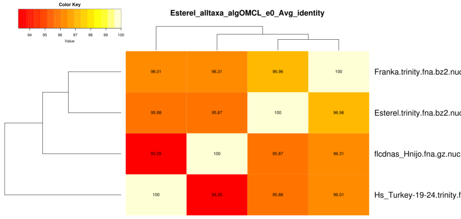
|
If the previous command is changed by adding option -t -2 only transcripts present in at least two strains will be considered,
which are output in folder:
sample_transcripts_fasta_est_homologues/Esterel_2taxa_algOMCL_e0_
This second command produces a significantly different pan-genome composition matrix, which changes from:
# file=sample_transcripts_fasta_est_homologues/pan_genome_algOMCL.tab
genomes mean stddev | samples
0 8559 6614 | 4665 4665 4665 ...
1 14830 6425 | 8937 9002 21292 ...
2 21384 4866 | 13004 24283 23358 ...
3 26380 468 | 27019 26209 25652 ...
to
# file=sample_transcripts_fasta_est_homologues/pan_genome_2taxa_algOMCL.tab
genomes mean stddev | samples
0 2860 1172 | 2262 2262 2262 ...
1 4270 490 | 4110 3828 4196 ...
2 4953 424 | 5475 4767 4294 ...
3 4954 424 | 5475 4768 4296 ...
Both matrices can be plotted with script plot_pancore_matrix.pl, with a command such as:
./plot_pancore_matrix.pl -i sample_transcripts_fasta_est_homologues/pan_genome_algOMCL.tab -f pan
Figure 6:
Pan-transcriptome size estimates (-t 0, left) and (-t 2, right) based on random samples of 4 transcriptome sets.
As the left example illustrates, four strains are usually not enough to fit a Tettelin-like function.
|
|
The next figure shows a similar analysis but now using genomic data instead of transcript sets. The example shows pan-genome
size estimates of Whole Genome Sequence assemblies of 19 Arabidopsis thaliana ecotypes, downloaded from
http://mus.well.ox.ac.uk/19genomes/sequences/CDS
and described
in PubMed=21874022.
Figure 7:
Core-genome, soft-core-genome and pan-genome CDS composition analysis of WGS assemblies of 19 A.thaliana ecotypes.
Note that the pan-genome simulation was done with all clusters (left) and with all clusters found in at least three genomes (right),
illustrating the effect of option -t 3, which might be useful to remove low confidence sequences.
Red numbers correspond to fitted values generated by plot_pancore_matrix.pl.
|
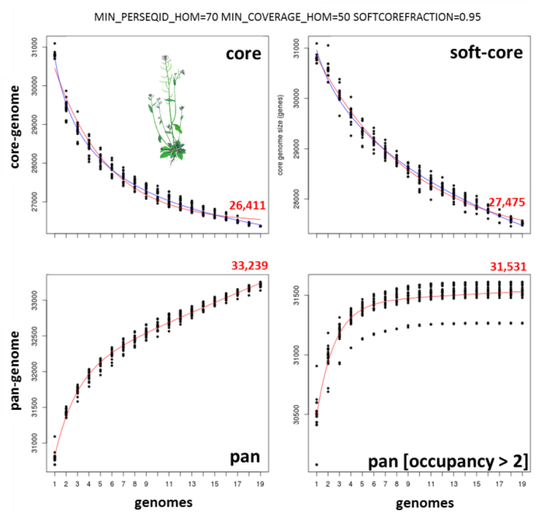
|
Script plot_pancore_matrix.pl can also be called with flag -a:
./plot_pancore_matrix.pl -i sample_transcripts_fasta_est_homologues/pan_genome_algOMCL.tab \
-f pan -a snapshots+
This will create and store a in folder snapshots/ a series of GIF images that can be used to animate pan-genome simulations.
The next Figure show some of this snapshots:
Figure 8:
Four snapshots of the pan-genome simulation carried out in the previous figure, generated by plot_pancore_matrix.pl.
|
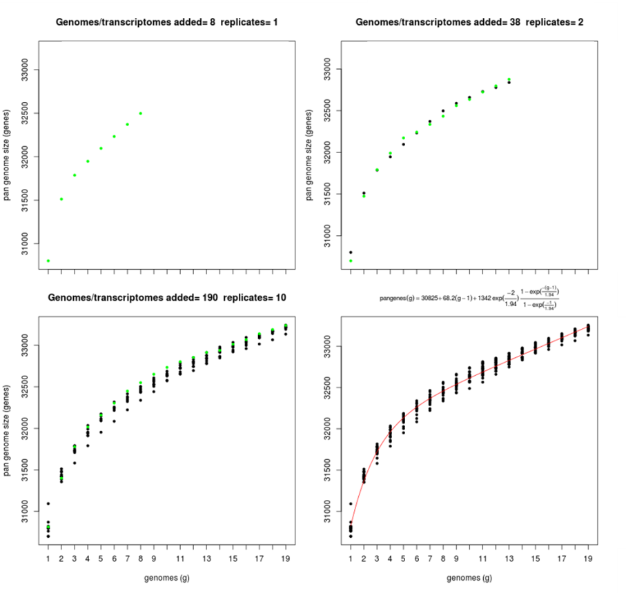
|
4.3 Clustering sequences on a multicore Linux box, not a cluster
This example takes the sample input folder sample_transcripts_fasta,
and demonstrates how you could run a large analysis on a multicore Linux box, not a computer cluster.
This example requires command-line tool parallel,
which in Ubuntu can be installed with sudo apt-get -y install:
# 1) run BLASTN (and HMMER) in batches
./get_homologues-est.pl -d sample_transcripts_fasta -o
# 2) run in -m dryrun mode
./get_homologues-est.pl -d sample_transcripts_fasta -m dryrun
# EXIT: check the list of pending commands at sample_transcripts_fasta_est_homologues/dryrun.txt
parallel < sample_transcripts_fasta_est_homologues/dryrun.txt
# repeat 2) until completion
./get_homologues-est.pl -d sample_transcripts_fasta -m dryrun
# ...
The clusters obtained in the previous section with option -t 2 can be used to compile a pangenome matrix
without singletons with this command:
./compare_clusters.pl -d sample_[...]/Esterel_2taxa_algOMCL_e0_ -o outdir -n -m
# number of input cluster directories = 1
# parsing clusters in sample_transcripts_fasta_est_homologues/Esterel_2taxa_algOMCL_e0_ ...
# cluster_list in place, will parse it (sample_[...]/Esterel_2taxa_algOMCL_e0_.cluster_list)
# number of clusters = 5241
# intersection output directory: outdir
# intersection size = 5241 clusters
# intersection list = outdir/intersection_t0.cluster_list
# pangenome_file = outdir/pangenome_matrix_t0.tab (and transposed)
# pangenome_genes = outdir/pangenome_matrix_genes_t0.tab (and transposed)
# pangenome_phylip file = outdir/pangenome_matrix_t0.phylip
# pangenome_FASTA file = outdir/pangenome_matrix_t0.fasta
# pangenome CSV file (Scoary) = outdir/pangenome_matrix_t0.tr.csv
The following, taken from the
tutorial,
explains the different versions of the same pangenome/pangene matrix:
pangenome_matrix_t0.tab is a numeric matrix with tab-separated (TSV) columns, with taxa/genomes as rows and sequence clusters as columns, in which cells with natural numbers indicate whether a given taxa contains 1+ sequences from a given cluster. It can be read and edited with any text editor or spreadsheet software, and is also produced in transposed form for convenience. For example, users might want to sort the clusters by position on a reference genome and use these matrices to visualize results.
pangenome_matrix_genes_t0.tab is similar to the previous one, but contains the actual sequence names in each cluster instead.
pangenome_matrix_t0.phylip is a reduced binary matrix in a format suitable for PHYLIP discrete character analysis software.
pangenome_matrix_t0.fasta is a reduced binary matrix in FASTA format suitable for binary character analysis software such as
IQ-TREE, which can compute bootstrap and aLRT support.
pangenome_matrix_t0.tr.csv is a transposed, reduced binary matrix in CSV format suitable for pangenome-wide association analysis with software Scoary.
If the optional R modules described in
manual_get_homologues.pdf
are installed, such a pangenome matrix can be used to hierarchically cluster strains with this command:
./hcluster_pangenome_matrix.sh -i outdir/pangenome_matrix_t0.tab
Figure 9:
Hierarchical grouping of strains based on pangenome matrix.
|
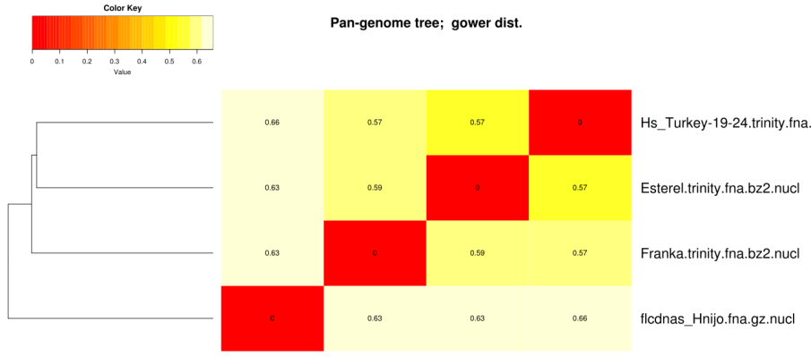
|
This example uses data from the barley benchmark, the test_barley/ folder,
which contains instructions to download sequences from:
http://floresta.eead.csic.es/plant-pan-genomes
After completing the downloads, the folder will contain FASTA files with nucleotide sequences of 14 de-novo assembled transcriptomes
and transcripts/cDNA sequences annotated in reference accessions Morex and Haruna Nijo. CDS can be extracted as explained
in Section 5 and then Pfam domains can be annotated as follows:
$ ./get_homologues-est.pl -d cds -D -o -m cluster
These annotations will serve to calculate background domain frequencies.
Once this is completed, we can compute "control" clusters with this command:
$ ./get_homologues-est.pl -d cds -M -m cluster
which we will then place in a folder called clusters_cds:
compare_clusters.pl -d cds_est_homologues/Alexis_0taxa_algOMCL_e0_ \
-o clusters_cds -m -n+
In order to call accessory sequences with more confidence we will use only non-cloud clusters (
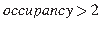), which we do with this command:
$ ./get_homologues-est.pl -d cds -M -t 3 -m cluster
The output should include the next lines:
# number_of_clusters = 34248
# cluster_list = cds_est_homologues/Alexis_3taxa_algOMCL_e0_.cluster_list
# cluster_directory = cds_est_homologues/Alexis_3taxa_algOMCL_e0_
We should be now in position to compile the pan-genome matrix corresponding to these clusters:
./compare_clusters.pl -d cds_est_homologues/Alexis_3taxa_algOMCL_e0_ \
-o clusters_cds_t3 -m -n
which should produce:
# number of clusters = 34248
# intersection output directory: clusters_cds_t3
# intersection size = 34248 clusters
# intersection list = clusters_cds_t3/intersection_t0.cluster_list
# pangenome_file = clusters_cds_t3/pangenome_matrix_t0.tab
# pangenome_phylip file = clusters_cds_t3/pangenome_matrix_t0.phylip
We should now interrogate the pan-genome matrix, for instance looking for clusters found in one genotype (A) but not in others (B):
./parse_pangenome_matrix.pl -m clusters_cds_t3/pangenome_matrix_t0.tab \
-A cds/SBCC073.list -B cds/ref.list -g
You should obtain a list of 4348 accessory clusters:
# matrix contains 34248 clusters and 16 taxa
# taxa included in group A = 1
# taxa included in group B = 2
# finding genes present in A which are absent in B ...
# file with genes present in set A and absent in B (4348):
clusters_cds_t3/pangenome_matrix_t0__pangenes_list.txt
Finally, we will now estimate whether these clusters are enriched in any Pfam domain, producing also a single FASTA
file with the tested sequences:
./pfam_enrich.pl -d cds_est_homologues -c clusters_cds -n -t greater \
-x clusters_cds_t3/pangenome_matrix_t0__pangenes_list.txt -e -p 0.05 \
-r SBCC073 -f SBCC073_accessory.fna
The output should be:
# 39400 sequences extracted from 113222 clusters
# total experiment sequence ids = 4818
# total control sequence ids = 39400
# parse_Pfam_freqs: set1 = 562 Pfams set2 = 3718 Pfams
# created FASTA file: SBCC073_accessory.fna
# sequences=4818 mean length=353.8 , seqs/cluster=1.11
# fisher exact test type: 'greater'
# multi-testing p-value adjustment: fdr
# adjusted p-value threshold: 1
# total annotated domains: experiment=1243 control=19192
#PfamID counts(exp) counts(ctr) freq(exp) freq(ctr) p-value p-value(adj) description
PF00009 0 20 0.000e+00 1.042e-03 1.000e+00 1.000e+00 Elongation factor Tu GTP binding domain
PF00010 0 32 0.000e+00 1.667e-03 1.000e+00 1.000e+00 Helix-loop-helix DNA-binding domain
...
PF00665 13 31 1.046e-02 1.615e-03 1.418e-06 1.318e-03 Integrase core domain
PF07727 28 61 2.253e-02 3.178e-03 3.033e-13 1.128e-09 Reverse transcriptase (RNA-dep DNA pol)
PF00931 44 201 3.540e-02 1.047e-02 1.750e-10 3.253e-07 NB-ARC domain
PF13976 14 19 1.126e-02 9.900e-04 2.744e-09 3.401e-06 GAG-pre-integrase domain
The script make_nr_pangenome_matrix.pl produces a non-redundant pangenome matrix by
comparing all clusters to each other, taking the median sequence in each cluster.
By default nucleotide sequences are compared, but if the original input of
get_homologues-est comprised both DNA and protein sequences, the user can also choose peptide
sequences to compute redundancy, which probably make more sense in terms of protein function.
On the contrary, it would seem more appropriate to use DNA sequences to measure diversity.
In this example a DNA-based non-redundant pangenome matrix is computed with BLASTN assuming
that sequences might be truncated (option -e) and using 10 processor cores and a coverage cutoff of 50%:
./make_nr_pangenome_matrix.pl -m outdir/pangenome_matrix_t0.tab -n 10 -e -C 50
# input matrix contains 5241 clusters and 4 taxa
# filtering clusters ...
# 5241 clusters with taxa >= 1 and sequence length >= 0
# sorting clusters and extracting median sequence ...
# running makeblastdb with outdir/pangenome_matrix_t0_nr_t1_l0_e1_C50_S90.fna
# parsing blast result! (outdir/pangenome_matrix_t0_nr_t1_l0_e1_C50_S90.blast , 0.37MB)
# parsing file finished
# 5172 non-redundant clusters
# created: outdir/pangenome_matrix_t0_nr_t1_l0_e1_C50_S90.fna
# printing nr pangenome matrix ...
# created: outdir/pangenome_matrix_t0_nr_t1_l0_e1_C50_S90.tab
Note that the previous command can be modified to match external reference sequences,
for instance from Swissprot,
or pre-computed clusters, such as groups of orthologous sequences,
so that the resulting matrix contains cross-references to those external clusters, and their annotations.
In either case, both input clusters and reference sequences must be of the same type: either nucleotides or peptides.
The next example shows how a set of clusters produced by get_homologues-est can be matched to some nucleotide
reference sequences, in this case annotated rice cDNAs:
./make_nr_pangenome_matrix.pl -m outdir/pangenome_matrix_t0.tab -n 10 -e -C 50 -f oryza.fna
This is the produced output:
# input matrix contains 5241 clusters and 4 taxa
# filtering clusters ...
# 5241 clusters with taxa >= 1 and sequence length >= 0
# sorting clusters and extracting median sequence ...
# re-using previous BLAST output outdir/pangenome_matrix_t0_nr_t1_l0_e1_C50_S90.blast
# parsing blast result! (outdir/pangenome_matrix_t0_nr_t1_l0_e1_C50_S90.blast , 0.34MB)
# parsing file finished
# 5172 non-redundant clusters
# created: outdir/pangenome_matrix_t0_nr_t1_l0_e1_C50_S90.fna
# 66339 reference sequences parsed in oryza.fna
# parsing blast result! (outdir/pangenome_matrix_t0_nr_t1_l0_e1_C50_S90_ref.blast , 0.37MB)
# parsing file finished
# matching nr clusters to reference (%alignment coverage cutoff=50) ...
# printing nr pangenome matrix ...
# created: outdir/pangenome_matrix_t0_nr_t1_l0_e1_C50_S90_ref_c50_s50.tab
# NOTE: matrix can be transposed for your convenience with:
perl -F'\t' -ane '$r++;for(1 .. @F){$m[$r][$_]=$F[$_-1]}; \
$mx=@F;END{for(1 .. $mx){for $t(1 .. $r){print"$m[$t][$_]\t"}print"\n"}}' \
outdir/pangenome_matrix_t0_nr_t1_l0_e1_C50_S90_ref_c50_s50.tab
The suggested perl command can be invoked to tranpose the matrix, which now contains rows such as these:
non-redundant Franka.bz2.nucl Esterel.bz2.nucl flcdnas_Hnijo.gz.nucl ... redundant reference
1_TR2804-c0_g1_i1.fna 1 1 0 0 NA LOC_Os09g07300.1 cDNA|BIG, putative, expressed
2_TR1554-c0_g1_i1.fna 0 2 1 0 NA LOC_Os03g53280.1 cDNA|WD domain containing protein
6_TR3918-c0_g1_i1.fna 0 1 1 0 NA NA
...
Pangenome matrices with more than 4 taxa can be plotted with help from script parse_pangenome_matrix.pl,
as explained in manual_get_homologues.pdf.
After analyzing pan-genome or pan-transcriptome clusters it might be interesting to find out what kind of transcripts or proteins they encode,
or we might just want to double-check the BLAST matches that support a produced cluster.
The script annotate_cluster.pl does just that, and can be used with both nucleotide and peptide clusters.
Note that in this first example it prints also the PFam domains (-D) annotated in those sequences:
./annotate_cluster.pl -f outdir/1004_TR425-c0_g2_i1.fna -o 1004_TR425-c0_g2_i1.aln.fna -D
And will produce this output:
# DEFBLASTNTASK=megablast DEFEVALUE=10
# MINBLUNTBLOCK=100 MAXSEQNAMELEN=60
# MAXMISMCOLLAP=0 MAXGAPSCOLLAP=2
# ./annotate_cluster.pl -f outdir/1004_TR425-c0_g2_i1.fna -r \
# -o 1004_TR425-c0_g2_i1.aln.fna -P 1 -b 0 -D 1 -c 0 -A -B
# total sequences: 3 taxa: 2
# Pfam domains: PF10602,PF01399,
# Pfam annotation: 26S proteasome subunit RPN7;PCI domain;
# aligned sequences: 3 width: 1595
# alignment sites: SNP=3 parsimony-informative=0 (outdir/1004_TR425-c0_g2_i1.fna)
# taxa included in alignment: 2
# alignment file: 1004_TR425-c0_g2_i1.aln.fna
If option -b is enforced a blunt-end alignment is produced, which might be useful for further analyses.
In either case, the produced FASTA alignment file will contain Pfam domains in each header,
in addition to the relevant BLAST scores:
>TR425|c0_g2_i1_[Esterel.trinity.fna.bz2] bits E-value N qy ht 1:1595 Pfam:..
CCTGCTGGTGCATTTTTTTACAAACAGTTGGCACAGAGTATTTGTTGCTAATTGTGTTCGTTTTCTTGAA...
Figure 10:
Fragment of alignment produced by annotate_cluster.pl,
rendered with BioEdit.
|
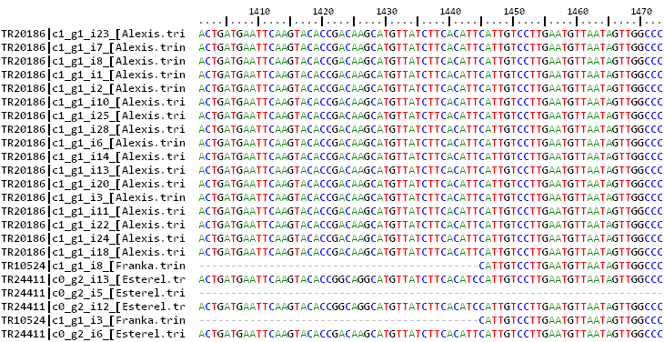
|
Optionally -c can also be invoked to collapse aligned sequences from the same species or taxon.
This might be useful when working with clusters of transcript isoforms, which are often redundant and
broken in possibly overlapping fragments. Taking the same example cluster, we could try to collapse
isoforms with overlaps residues like this:
./annotate_cluster.pl -f outdir/1004_TR425-c0_g2_i1.fna -o 1004_TR425-c0_g2_i1.aln.fna -D -c 30
This script does not tolerate mismatches between sequences to be collapsed; however,
that behaviour can be relaxed by editing the value of variable $MAXMISMCOLLAP=0 at the top of the
script.
Instead, as BLASTN-placed gaps in identical sequences can often move, by default two such gaps are accepted
(see variable MAXGAPSCOLLAP=2).
By default, the script annotate_cluster.pl looks for the longest sequences and aligns all other cluster
sequences to it with BLASTN (megablast). The user can also pass an external, reference sequence to guide cluster
alignment (see option -r). However, in either case, clusters of transcripts often contain a fraction
of BLASTN hits that do not match the longest/reference sequence; instead, they align towards the 5' or 3' of
other sequences of the clusters and are thus not included in the produced multiple sequence alignment (MSA):
----------------- <= longest/reference sequence
-------------
-------------
-----------
------------
.... <= sequences not included in MSA
..
We called these pseudo-multiple alignments as they are computed from pairwise alignments of the longest/reference (query)
to all other cluster sequences. The resulting alignment is produced by MVIEW,
which does not record deletions in the query sequence. This means that an alignment like this:
------ ----------- <= longest/reference sequence
---..---------- <= .. fragment not included in MSA
------ -----
---- --------
will in fact be saved as:
-----------------
-------------
-----------
------------
In case you want to compute full multiple sequence alignments, including all indels, please use option -u).
This way the script will produce unaligned complete sequences, flipped if required,
so that external software (clustal-omega, muscle, MAFFT, etc) can be used to align them.
The primary output of get_homologues-est is a set of clusters of sequences in FASTA format.
These are stored in a folder named according to the input data and the choice of parameters.
For instance, a test run with command
./get_homologues-est.pl -d sample_transcripts_fasta/ -m cluster -M -A -t 0
will produce an output folder named Esterel_alltaxa_algOMCL_e0_.
The contents of this folder are summarized in file Esterel_alltaxa_algOMCL_e0_.cluster_list,
which looks like this:
cluster 1_TR2804-c0_g1_i1 size=2 taxa=2 file: 1_TR2804-c0_g1_i1.fna aminofile: void
: Esterel.trinity.fna.bz2.nucl
: Franka.trinity.fna.bz2.nucl
cluster 2_TR1554-c0_g1_i1 size=3 taxa=2 file: 2_TR1554-c0_g1_i1.fna aminofile: void
: Esterel.trinity.fna.bz2.nucl
: Esterel.trinity.fna.bz2.nucl
: flcdnas_Hnijo.fna.gz.nucl
cluster 4_TR593-c0_g2_i1 size=2 taxa=1 file: 4_TR593-c0_g2_i1.fna aminofile: void
: Esterel.trinity.fna.bz2.nucl
: Esterel.trinity.fna.bz2.nucl
cluster 6_TR3918-c0_g1_i1 size=2 taxa=2 file: 6_TR3918-c0_g1_i1.fna aminofile: void
: Esterel.trinity.fna.bz2.nucl
: flcdnas_Hnijo.fna.gz.nucl
cluster 7_TR1297-c0_g1_i3 size=4 taxa=2 file: 7_TR1297-c0_g1_i3.fna aminofile: void
: Esterel.trinity.fna.bz2.nucl
: Esterel.trinity.fna.bz2.nucl
: Esterel.trinity.fna.bz2.nucl
: flcdnas_Hnijo.fna.gz.nucl
This excerpt describes the first resulting clusters, the number of sequences in each (size) and their respective genomes/strains (taxa).
Note that in this case there are only nucleotide clusters; if twin peptides files are provided as input then protein clusters should also be produced.
Each cluster name name is followed by a list of taxa matching the order of sequences contained in it. For instance, if we check the first
cluster (Esterel_0taxa_algOMCL_e0_/1_TR2804-c0_g1_i1.fna), it looks like this:
>TR2804|c0_g1_i1 [Esterel.trinity.fna.bz2] | aligned:9590-15261 (15270)
ATCTACGTATCCGAAACAATCCCGAGCAAAAGCAGAAAGAAACTTTAAAAAAAATGCGGCAACAGGAG...
>TR3086|c0_g1_i1 [Franka.trinity.fna.bz2] | aligned:1-5672 (5672)
GCATCTTTCACCAAGACTGTGTCAGTCAATGTTTTGGCACCGACATCGCCTGCCAATACAAT...
Besides clusters, there are other output files that can be produced by get_homologues-est;
let's review some of them:
- Pan-genome composition matrices (
pan_genome_algOMCL.tab, core_genome_algOMCL.tab, see section 4.2)
contain the results of composition analyses, first described in the
get_homologues
manual.
These tab-separated text files contain estimates of core and pan-genome growth when input genomes are sampled one by one
in random order. There is also a relaxed soft-core version (soft-core_genome_algOMCL.tab)
which requires a cluster to be supported by 95% of the input strains/genomes in order to be considered.
Let's see the first five lines of core_genome_algOMCL.tab:
g1 g2 g3 g4
4668 491 85 67
4668 433 308 67
4668 2000 344 67
4668 491 344 67
20010 1749 290 67
This example file contains the results of sampling 20 times (see global variable $NOFSAMPLESREPORT)
4 input sequence sets/transcriptomes. Columns g1 to g4 indicate the current genome size after adding one genome (from first to fourth).
These files can be used to produce plots with script plot_pancore_matrix.pl.
In fact, each row in these files can be plotted as a replicate/snapshot by invoking option -a, as shown in Figure 8.
- Average Nucleotide Identity matrices (
Esterel_alltaxa_algOMCL_e0_Avg_identity.tab, see section 4.2)
summarize the average identity among nucleotides sequences clustered together among pairs of genomes/strains (taxa).
These are tab-separated text files. Note that .fna.*.nucl suffixes have been removed for brevity:
genomes Esterel.trinity Franka.trinity Hs_Turkey-19-24.trinity flcdnas_Hnijo
Esterel.trinity 100 99.15 98.89 99.30
Franka.trinity 99.15 100 98.79 99.22
Hs_Turkey-19-24.trinity 98.89 98.79 100 99.18
flcdnas_Hnijo 99.30 99.22 99.18 100
- Percent Conserved Sequences files (
Esterel_0taxa_algOMCL_e0_POCS.tab)
contain the percentage of conserved sequence clusters among pairs of genomes/strains (taxa).
In other words, POCP/POCS values summarize how many clusters of one genome contain also sequences from another.
These are tab-separated text files. Note that .fna.*.nucl suffixes have been removed for brevity:
genomes Esterel.trinity Franka.trinity Hs_Turkey-19-24.trinity flcdnas_Hnijo
Esterel.trinity 100 11.15 9.90 17.87
Franka.trinity 11.15 100 9.60 17.55
Hs_Turkey-19-24.trinity 9.90 9.60 100 15.77
flcdnas_Hnijo 17.87 15.55 15.77 100
5 A step-by-step protocol with barley assembled transcripts
This section describes the steps required to proceed with the analysis of barley transcripts
with folder test_barley, which you should get with the software.
The following commands are to be pasted in your terminal:
## set get_homologues path if not already in $PATH
export GETHOMS=~/soft/github/get_homologues/
cd test_barley
## 1) prepare sequences
cd seqs
# download all transcriptomes
wget -c -i wgetlist.txt
# extract CDS sequences (this takes several hours)
# choose cdsCPP.sh if dependency Inline::CPP is available in your system
# the script will use 20 CPU cores, please adapt it to your system
./cds.sh
# clean and compress
#rm -f _* *noORF* *transcript*
#gzip *diamond*
# put cds sequences aside
mv *cds.f*gz ../cds
cd ..
# check lists of accessions are in place (see HOWTO.txt there)
ls cds/*list
## 2) cluster sequences and start the analyses
# calculate protein domain frequencies (Pfam)
$GETHOMS/get_homologues-est.pl -d cds -D -m cluster -o &> log.cds.pfam
# alternatively, if not running in a SGE cluster, taking for instance 20 CPUs
$GETHOMS/get_homologues-est.pl -d cds -D -n 20 -o &> log.cds.pfam
# calculate 'control' cds clusters
$GETHOMS/get_homologues-est.pl -d cds -M -t 0 -m cluster &> log.cds
# get non-cloud clusters
$GETHOMS/get_homologues-est.pl -d cds -M -t 3 -m cluster &> log.cds.t3
# clusters for dN/dS calculations
$GETHOMS/get_homologues-est.pl -d cds -e -M -t 4 -m cluster &> log.cds.t4.e
# leaf clusters and pangenome growth simulations with soft-core
$GETHOMS/get_homologues-est.pl -d cds -c -z \
-I cds/leaf.list -M -t 3 -m cluster &> log.cds.leaf.t3.c
# produce pan-genome matrix and allocate clusters to occupancy classes
# all occupancies
$GETHOMS/compare_clusters.pl -d cds_est_homologues/Alexis_0taxa_algOMCL_e0_ \
-o clusters_cds -m -n &> log.compare_clusters.cds
# excluding cloud clusters, the most unreliable in our benchmarks
$GETHOMS/compare_clusters.pl -d cds_est_homologues/Alexis_3taxa_algOMCL_e0_ \
-o clusters_cds_t3 -m -n &> log.compare_clusters.cds.t3
$GETHOMS/parse_pangenome_matrix.pl -m clusters_cds_t3/pangenome_matrix_t0.tab -s \
&> log.parse_pangenome_matrix.cds.t3
# make pan-genome growth plots
$GETHOMS/plot_pancore_matrix.pl -i cds_est_homologues/core_genome_leaf.list_algOMCL.tab \
-f core_both &> log.core.plots
$GETHOMS/plot_pancore_matrix.pl -i cds_est_homologues/pan_genome_leaf.list_algOMCL.tab \
-f pan &> log.pan.plots
## 3) annotate accessory genes
# find [-t 3] SBCC073 clusters absent from references
$GETHOMS/parse_pangenome_matrix.pl -m clusters_cds_t3/pangenome_matrix_t0.tab \
-A cds/SBCC073.list -B cds/ref.list -g &> log.acc.SBCC073
mv clusters_cds_t3/pangenome_matrix_t0__pangenes_list.txt \
clusters_cds_t3/SBCC073_pangenes_list.txt
# how many SBCC073 clusters are there?
perl -lane 'if($F[0] =~ /SBCC073/){ foreach $c (1 .. $#F){ if($F[$c]>0){ $t++ } }; print $t }' \
clusters_cds_t3/pangenome_matrix_t0.tab
# find [-t 3] Scarlett clusters absent from references
$GETHOMS/parse_pangenome_matrix.pl -m clusters_cds_t3/pangenome_matrix_t0.tab \
-A cds/Scarlett.list -B cds/ref.list -g &> log.acc.Scarlett
mv clusters_cds_t3/pangenome_matrix_t0__pangenes_list.txt \
clusters_cds_t3/Scarlett_pangenes_list.txt
# find [-t 3] H.spontaneum clusters absent from references
$GETHOMS/parse_pangenome_matrix.pl -m clusters_cds_t3/pangenome_matrix_t0.tab \
-A cds/spontaneum.list -B cds/ref.list -g &> log.acc.spontaneum
mv clusters_cds_t3/pangenome_matrix_t0__pangenes_list.txt \
clusters_cds_t3/spontaneum_pangenes_list.txt
# Pfam enrichment tests
# core
$GETHOMS/pfam_enrich.pl -d cds_est_homologues -c clusters_cds -n \
-x clusters_cds_t3/pangenome_matrix_t0__core_list.txt -e -p 1 \
-r SBCC073 > SBCC073_core.pfam.enrich.tab
$GETHOMS/pfam_enrich.pl -d cds_est_homologues -c clusters_cds -n \
-x clusters_cds_t3/pangenome_matrix_t0__core_list.txt -e -p 1 \
-r SBCC073 -t less > SBCC073_core.pfam.deplet.tab
# accessory
$GETHOMS/pfam_enrich.pl -d cds_est_homologues -c clusters_cds -n \
-x clusters_cds_t3/SBCC073_pangenes_list.txt -e -p 1 -r SBCC073 \
-f SBCC073_accessory.fna > SBCC073_accessory.pfam.enrich.tab
$GETHOMS/pfam_enrich.pl -d cds_est_homologues -c clusters_cds -n \
-x clusters_cds_t3/Scarlett_pangenes_list.txt -e -p 1 -r Scarlett \
-f Scarlett_accessory.fna > Scarlett_accessory.pfam.enrich.tab
$GETHOMS/pfam_enrich.pl -d cds_est_homologues -c clusters_cds -n \
-x clusters_cds_t3/spontaneum_pangenes_list.txt -e -p 1 -r Hs_ \
-f spontaneum_accessory.fna > spontaneum_accessory.pfam.enrich.tab
# note that output files contain data such as the mean length of sequences
# get merged stats for figure
perl suppl_scripts/_add_Pfam_domains.pl > accessory_stats.tab
perl -lane 'print if($F[0] >= 5 || $F[1] >= 5 || $F[2] >= 5)' \
accessory_stats.tab > accessory_stats_min5.tab
Rscript suppl_scripts/_plot_heatmap.R
6 Frequently asked questions (FAQs)
Please see also and FAQs in
manual_get_homologues.pdf.
Most apply also to get_homologues-est.pl, such as running on a computer farm or on Windows systems.
- What's the performance gain of v2?
After evolving parts of the original code base, and fixing some bugs (see CHANGES.txt), both
get_homologues.pl and get_homologues-est.pl have significantly improved their performance, as can be seen
in the figure, which combines data from the original benchmark and new data generated after v2 was in place.
Figure 11:
Computing time and RAM requirements of the original algorithm (OMCL, measured on 6 sequence sets)
as compared to the updated v2 code (measured on 3 three sets).
|
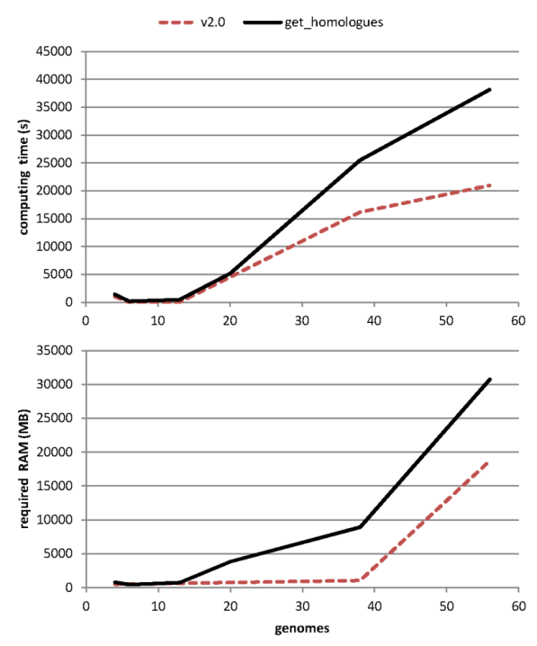
|
- What are the main caveats when clustering transcripts/CDS sequences?
get_homologues-est.pl has been mainly tested with plant sequences, using both CDS sets from whole-genome annotations and also
transcripts from expression experiments. The main problems we have found so far are split genes, frequent artifacts in genome assemblies,
incomplete genes which lack exons, for the same previous reasons, and retained introns, which are common among plant transcripts.
These three common situations are illustrated in the figure.
Figure 12:
Common problems faced when clustering transcripts/CDS sequences.
|
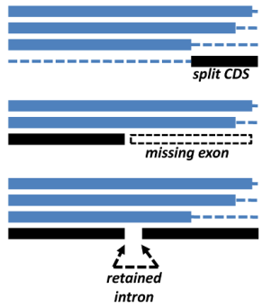
|
- What are those chimeras warnings produced when running transcripts2cds?
When subroutine transcripts::parse_blastx_cds_sequences reads BLASTX/DIAMOND results checks whether secondary alignments
to the same protein sequence are in the same strand as the primary alignment. In cases were a second or third BLAST HSP of the same
hit is found on the opposite strand, that warning is printed to alert the user.
- Why have you not implemented the COG algorithm in the get_homologues-est.pl?
We have left the COG algorithm out of get_homologues-est.pl as it will take some more work to integrate it
with redundant isoform calling, which is important for EST datasets. However, it should be possible
to do it.
- The number of clusters produced with
-C 75 -S 85 does not match the pangenome/pantranscriptome size estimated with option -c
The reason for these discrepancies is that these are fundamentally different analyses.
While the default runmode simply groups sequences trying to put in the same cluster isoforms of orthologues and very close inparalogues,
a genome composition analysis performs a simulation in order to estimate how many novel sequences are added by
genomes/transcriptomes sampled in random order. In terms of code, there are a couple of key global variables set in
lib/marfil_homology.pm, lines 135-138, which control how a gene/transcript is compared to previously processed sequences
in order to call it novel:
$MIN_PERSEQID_HOM_EST = 70.0;
$MIN_COVERAGE_HOM_EST = 50.0;
These values are equivalent to say that any sequence with
 and
to previous genes/transcripts
will be considered simply a homologue and won't be accumulated to the growing pangenome/pantranscriptome.
You might want to change these values to increase or relax the stringency and to match the parameters set to produce your clusters.
and
to previous genes/transcripts
will be considered simply a homologue and won't be accumulated to the growing pangenome/pantranscriptome.
You might want to change these values to increase or relax the stringency and to match the parameters set to produce your clusters.
- Can get_homologues-est.pl be used to analyze non-coding sequences?
In principle the software should work with any type of nucleotide sequences. For instance, the next figure shows how it can used
to analyze conserved non-coding sequences among Brachypodium distachyon and rice, with a median BLASTN alignment length of 32.
Figure 13:
Core-genome composition analysis of conserved non-coding sequences (CNS) from 56 Brachypodium distachyon ecotypes and rice.
|
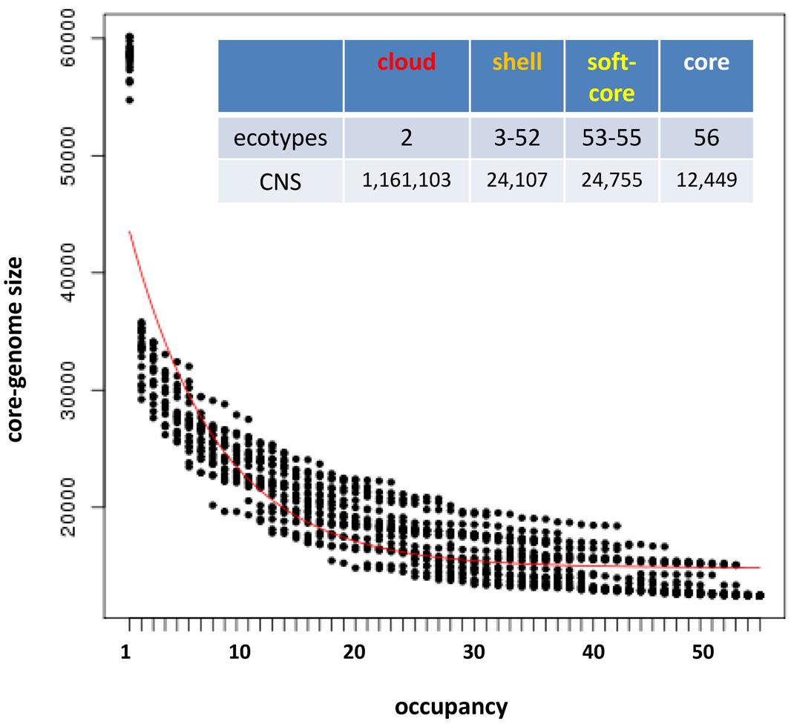
|
- I produced 2 different parsimony trees with compare_clusters.pl, is there a way to merge them and add bootstrap values?
The two trees are equally parsimonious, that is, have the same parsimony score but different topologies.
One possibility to combine them into one topology is to compute either the majority rule consensus (mjr) tree,
for example with consense from the PHYLIP package, or represent a network consensus with a program such as splitstree.
Regarding the bootstrapping, you could write some R code (or in any other language) to randomly sample the columns
in the pangenome matrix with replacement to construct a new, bootstrapped matrix with the same number of columns
as the original one. You should generate 100 or 500 of these matrices and then run pars on each one of them.
Then run consense to obtain the mjr consensus tree and associated split frequencies (bootstrap support values for each bipartition).
An easy way of achieving this would be with R's boot
package
(see example).
Another option is to call seqboot from the PHYLIP package to generate N bootstrap pseudo-replicates of the matrix.
Rename the resulting file as infile and call pars to read the file, using the option m no_of_pseudoreplicates
to run the standard (Fitch) parsimony analysis on each of the bootstraped matrices. PHYLIP pars will generate an outtree file
containing as many trees as bootstraped matrices found in infile. Rename outtree to intree and call consense to generate the
default majority rule consensus tree. This tree is only a cladogram (only topology, no branch lengths).
The node labels correspond to the number of bootstrap pseudoreplicates in which that particular bipartition was found.
- How can I produce a maximum likelihood (ML) tree with bootstrap values from a pangenome matrix?
We recommend script estimate_pangenome_trees.sh from the GET_PHYLOMARKERS
pipeline.
Another alternative is to use the .fasta version of the pangenome matrix produced by script ./compare_clusters.pl -m ,
next to the .tab and .phy files.
This FASTA file can be analyzed with ML software such as IQ-TREE
(PubMed=25371430) both online or in the terminal with a command such as:
path_to_iqtree -s pangenome_matrix_t0.fasta -st BIN -m TEST -bb 1000 -alrt 1000
This will produce an optimal ML tree after selecting a binary substitution model with both bootstrap and aLRT support values.
- Is there a way to plot ANI matrices of soft-core clusters?
Let's say you have 20 genomes, then 95% of them are exaclty 19 taxa, which is the minimum occupancy that defines soft-core clusters
(see global variable $SOFTCOREFRACTION). You should then compute the ANI matrix as follows:
./get_homologues.pl -d your_data -a 'CDS' -A -M -t 19
And then plot the resulting matrix with script hcluster_pangenome_matrix.sh.
- When I use the hcluster_pangenome_matrix.sh script the trees in the output of the newick file and the heatmap differ. Is there a reason for this?
The difference in the topologies of the NJ trees and the row-dendrogram of the heatmaps differ because the heatmaps
are ordered bi-dimensionally. That is, the heatmap plot shows only the row-dendrogram, but the matrix is ordered also by columns.
The NJ tree is computed from the distance matrix that you indicate the program to calculate for you (ward.D2 is the default).
- I ran get_homologues with fasta files of 78 genomes; is there a way to export a 78 x 78 matrix
of the number of homologues shared between each genome?
If you did your analysis requesting cluster of all occupancies (-t 0) then you can get what you want in two steps.
First, you must produce a pangenome matrix with compare_clusters -d ... -m. Now it is possible to request an intersection
pangenome matrix (pangenome_matrix_t0__intersection.tab) which contains the number of sequence clusters shared by
any two pairs of genomes with parse_pangenome_matrix.pl -m pangenome_matrix_t0.tab -s -x.
Note that these clusters might contain several inparalogues of the same species.
- How can I use get_homologues to produce clusters for GET_PHYLOMARKERS?
You should use option -e and make sure that your input FASTA nucleotide files have twin files with matching peptide sequences.
Then, in GET_PHYLOMARKERS make sure to set option -f EST.
- I have been using GET_HOMOLOGUES and I could not figure out which is the default value for saving blastn hits, I mean,
the value set for '-max_target_seqs'
BLAST parameter -max_target_seqs is set to the number of sequences of the query proteome, which usually is a large number
that ensures all good quality hits are recovered. Read more here.
- Why does get_homologues not normalize alignment scores as OrthoFinder?
It is possible to experimentally normalize the scores using the script
here.
However, our tests suggest this might cause unexpected consequences and for that reason this is not done by default.
get_homologues-est.pl is designed, created and maintained at the
Laboratory of Computational Biology
at
Estación Experimental de Aula Dei-CSIC in Zaragoza (Spain) and at the
Center for Genomic Sciences
of
Universidad Nacional Autónoma de México (CCG/UNAM).
The code was written mostly by Bruno Contreras-Moreira and Pablo Vinuesa, but it also includes
code and binaries from OrthoMCL v1.4
(algorithm OMCL, -M),
NCBI Blast+, MVIEW,
DIAMOND
and BioPerl 1.5.2.
Other contributors: Carlos P Cantalapiedra, Alvaro Rodriguez del Rio, Ruben Sancho, Roland Wilhelm,
David A Wilkinson.
We ask the reader to cite the main reference describing the get_homologues software,
- Contreras-Moreira B, Cantalapiedra CP, Garcia Pereira MJ, Gordon S, Vogel JP,
Igartua E, Casas AM and Vinuesa P (2017) Analysis of plant pan-genomes and
transcriptomes with GET_HOMOLOGUES-EST, a clustering solution for sequences of
the same species. Front. Plant Sci. https://doi.org/10.3389/fpls.2017.00184
- Contreras-Moreira B, Rodriguez del Rio A, Cantalapiedra CP, Sancho R, Vinuesa P
(2022) Pangenome Analysis of Plant Transcripts and Coding Sequences. In: Pereira-Santana A,
Gamboa-Tuz SD, Rodriguez-Zapata LC (eds) Plant Comparative Genomics. Methods
in Molecular Biology, vol 2512. Humana, New York, NY.
https://doi.org/10.1007/978-1-0716-2429-6_9
and also the original papers describing the included algorithms and databases, accordingly:
- Li L, Stoeckert CJ Jr, Roos DS (2003) OrthoMCL: identification of ortholog
groups for eukaryotic genomes. Genome Res. 13(9):2178-89.
- Altschul SF, Madden TL, Schaffer AA, Zhang J, Zhang Z, Miller W and Lipman DJ (1997)
Gapped BLAST and PSI-BLAST: a new generation of protein database search programs.
Nucl. Acids Res. 25(17): 3389-3402.
- Stajich JE, Block D, Boulez K, Brenner SE, Chervitz SA, Dagdigian C, Fuellen G,
Gilbert JG, Korf I, Lapp H, Lehv�slaiho H, Matsalla C, Mungall CJ, Osborne BI,
Pocock MR, Schattner P, Senger M, Stein LD, Stupka E, Wilkinson MD, Birney E. (2002)
The Bioperl toolkit: Perl modules for the life sciences. Genome Res. 12(10):1611-8.
- hmmscan :: search sequence(s) against a profile database HMMER 3.1b2 (Feb 2015) http://hmmer.org
Copyright (C) 2015 Howard Hughes Medical Institute.
Freely distributed under the GNU General Public License (GPLv3).
- Paysan-Lafosse, Typhaine et al. (2025) The Pfam protein families database:
embracing AI/ML. Nucleic Acids Res. 53(D1): D523-D534.
- Haas BJ, Papanicolaou A, Yassour M et al. (2013) De novo transcript sequence
reconstruction from RNA-seq using the Trinity platform for reference generation
and analysis. Nat Protoc. 8(8):1494-512.
- Brown NP, Leroy C, Sander C (1998) MView: A Web compatible database search or
multiple alignment viewer. Bioinformatics. 14 (4):380-381.
- Buchfink B, Xie C, Huson DH (2015) Fast and sensitive protein alignment using
DIAMOND. Nat Methods. 12(1):59-60
If you use the accompanying scripts the following references should also be cited:
- R Core Team (2013) R: A Language and Environment for Statistical Computing. http://www.R-project.org
R Foundation for Statistical Computing, Vienna, Austria, ISBN3-900051-07-0
get_homologues-est manual
This document was generated using the
LaTeX2HTML translator Version 2019.2 (Released June 5, 2019)
The command line arguments were:
latex2html manual-est -no_antialias_text -split 0 -dir manual-est -no_navigation -show_section_numbers
The translation was initiated on 2026-01-08